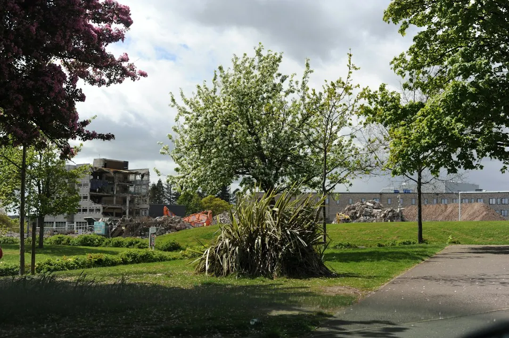

The guide lists 8 landscaping services across more than 15 Perth suburbs, including gardens, front yards, backyards, pool surrounds, courtyards, paving and verges. Main cost factors include sandy soil, sloping ground, access, old lawn or rubble removal and new reticulation. Before seeking a quote, identify the space, record its site conditions, choose the main materials and decide whether you need design work, construction, planting or a combination.
For homeowners comparing garden maintenance perth options, the practical decision is how much of the space needs changing, what the sandy ground requires, and whether the work is planting, construction, or a larger design-and-build project.
Garden Maintenance Perth Explained
The Landscaping Perth guide places soil and site conditions at the beginning of the decision. Northern suburbs blocks from Balcatta to Joondalup commonly have pale coastal sand that drains quickly and holds few nutrients. Soil preparation, mulch and plant choice can therefore affect how new planting establishes.
Before discussing a layout, record whether the block is sloping, where the sun and shade fall, whether the site is exposed to coastal conditions, and how materials or machinery could reach the work area. Mention old lawn, buried rubble, narrow side access and existing retaining because each can alter the work required.
Perth summers are long, hot and dry, while scheme water operates on rostered watering days. Water wise or native planting, efficient reticulation, mulch, paving and decking should be considered as part of the initial brief.
Choose the work by outcome
The space you want to change determines the questions worth asking. A whole garden may combine planting, lawn, paths, shade and privacy. A front yard may prioritise low upkeep planting, driveway edges, paths and limestone walls. A backyard may need lawn or artificial grass, decking and screening suited to how the household uses it.
Pool surrounds require plants, paving, decking, screening and lighting to be considered together, while a courtyard, villa garden or side strip needs decisions that preserve useful circulation in a smaller area. Paving may also involve garden beds, levelling and limestone retaining.
- For planting, ask what soil improvement and mulch are included.
- For construction, ask how levelling, retaining and access are allowed for.
- For a small space, confirm how drainage, movement and storage will be handled.
- For a verge, check council limits on planting, mulch and reticulation before materials are ordered.
A full design first may suit a larger space or unsettled ideas. A contractor planning and building in one process may suit a simpler brief. The choice should follow the size of the project and how definite the design already is.
Compare what each quote includes
An itemised written quote should separate visible garden work from preparation underneath it. Ask for soil improvement, mulch, planting, removal, retaining, paving, reticulation and access allowances to be shown clearly. If digging may uncover limestone or rubble, ask how those conditions will be handled.
Hourly pricing tends to suit small tidy ups and planting days, while fixed pricing tends to suit construction work. For a larger job, ask how additional hours will be controlled. With either format, confirm exclusions, material supply and whether old lawn or rubble removal is included.
Comparing only the final total can hide differences in preparation. A lower figure may not include the work needed to improve sandy ground, remove obstacles or build on a slope. Ask each contractor to price the same scope so the responses can be compared fairly.
Plan around verges and seasons
A street verge is public land, so its planting, mulch and reticulation may be subject to council limits. Check the relevant requirements before settling the layout. Give the proposed treatment enough detail for both compliance questions and pricing.
Autumn or winter planting allows rainfall to help new plants settle before summer. Discuss establishment watering, soil preparation and plant selection together, especially where the garden will rely on efficient reticulation or water wise planting.
Location notes are useful when they change the site assessment. Coastal exposure, block size, slope and access can affect the brief in Perth's northern suburbs. A suburb name alone does not explain the work, so connect it to a physical condition that the quote needs to address.
Prepare a useful enquiry
Begin by naming the space: whole garden, front yard, backyard, pool surround, courtyard, paving area or verge. Then state the preferred balance between lawn or artificial grass, paving or decking, and native or mixed planting. Add a rough budget, the main priorities and photographs of the existing space.
The enquiry process asks for the suburb, job type, property area and project notes, with photos available to show the site. Include slope, sun, shade, access, sandy soil, old lawn, rubble and existing retaining where relevant. These details give the contractor a defined brief rather than a broad service label.
For a second regional perspective, read the guide to landscaping services across Perth. Compare responses by scope, inclusions and assumptions about the site.
- Define the space and desired outcome.
- Record ground, access, sun, shade and verge considerations.
- Set material and planting priorities.
- Request an itemised written quote and clarify exclusions before work starts.
- Define the space. Choose the garden, front yard, backyard, pool surround, courtyard, paving area or verge that needs attention.
- Inspect the site. Note slope, sun, shade, access, coastal exposure, sandy soil, old lawn and buried rubble.
- Set priorities. Choose between lawn or artificial grass, paving or decking, native or mixed planting, and design first or plan and build.
- Request detail. Provide the suburb, property area, job type, notes and photographs, then ask for an itemised written quote.
| Option | Often suits | Questions to ask |
|---|---|---|
| Hourly rate | Small tidy ups and planting days | What is included, and how are extra hours controlled? |
| Fixed price | Larger construction work | Are access, ground conditions, removal and materials included? |
Common questions
What commonly increases the cost of a Perth garden project? The main listed cost drivers are sandy soil preparation, retaining on sloping blocks, difficult access, old lawn or rubble removal and new reticulation.
Is an hourly rate suitable for every garden job? No. Hourly rates tend to suit small tidy ups and planting days, while fixed prices tend to suit construction work. Ask how extra hours and unexpected ground conditions will be handled.
What should be checked before changing a street verge? A verge is public land, so check the relevant council limits on planting, mulch and reticulation before finalising the design.
When can planting benefit from seasonal conditions? Autumn or winter planting lets rainfall help new plants settle before the hotter summer period.
This guide covers site planning, quote comparisons and seasonal decisions for residential outdoor work across Perth.